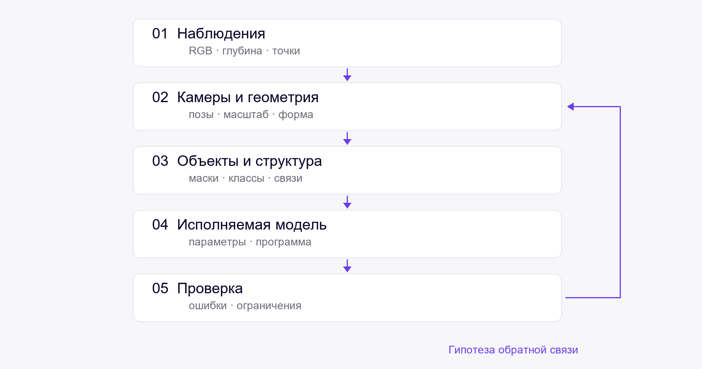

Глава 1. Постановка задач и обзор
Что восстанавливается по наблюдениям, какие представления сравниваются и как измерять результат.
1.1. От наблюдений к структурированной модели
ЧерновикРеконструкцию удобно рассматривать как последовательность переходов между представлениями. Изображения дают наблюдения поверхностей; оценка камер связывает виды; геометрия описывает форму; распознавание выделяет объекты; структурированная модель связывает их с параметрами и отношениями.

Схема показывает план изложения. Стрелки не означают, что единая система уже реализована.
Результат каждого этапа должен сопровождаться сведениями о системе координат, масштабе, видимости и неопределённости. Это делает возможным анализ ошибок между этапами.

1.2. Постановки задач и режимы наблюдения
Черновик| Режим | Что дано | Что оценивается | Основная неоднозначность |
|---|---|---|---|
| RGB без поз | Изображения | Камеры и геометрия | Масштаб, перекрытие, связность |
| RGB с позами | Изображения и калибровка | Геометрия и объекты | Невидимые поверхности |
| RGB-D | Цвет и глубина | Регистрация и объединённая сцена | Шум и пропуски измерений |
| Облако точек | 3D-наблюдения | Объекты и форма | Неполнота, плотность, семантика |
| Отдельный объект | Его наблюдения | Параметрическая модель | Неединственность истории построения |
Сравнение методов допустимо при сопоставимых входах. Качество по истинным позам не заменяет оценку по позам, восстановленным из изображений. План помещения может быть входом, ограничением или целевым результатом — роль должна быть указана явно.
1.3. Представления результата
ЧерновикОблако точек, сетка, поле плотности, набор объектов и CAD-программа описывают разные свойства сцены. Выбор представления определяется задачей использования: просмотром, измерением, семантическим анализом или редактированием.
Для обсуждения введём модель \(M=(C,G,S,P,A)\), где \(C\) — камеры, \(G\) — геометрия, \(S\) — семантика и отношения, \(P\) — параметрическая или программная структура, \(A\) — внешний вид.
Это обозначение задаёт рамку исследования. Оно само по себе не определяет алгоритм и не доказывает возможность совместной оптимизации всех компонент.
1.4. Линии развития методов
ЧерновикИсторическая линия начинается с соответствий между видами, робастного оценивания и подгонки параметрических моделей. В ранних работах рассматриваются направленное отслеживание и адаптация оценки к неизвестному шуму (A. и др. 2005 г.; S. и др. 2006 г.; Khropov и Konushin 2006 г.).
Дальнейшие линии — обучаемая геометрия, трёхмерное распознавание, генерация параметров и программ построения. В черновике их необходимо связать через общие входы, выходы и экспериментальные ограничения, сохраняя различия научных задач.
Доработать: хронологическую схему, критерии перехода между поколениями методов и сопоставление с современными внешними подходами. Полный обзор литературы здесь ещё не подготовлен.
1.5. Датчики, данные и метрики
ЧерновикПротокол должен фиксировать тип сенсора, калибровку, версию набора данных, разбиение сцен, доступ к эталонным позам и геометрии. Отдельно указываются данные обучения, настройки и итогового тестирования.
Для поз нужны ошибки положения и ориентации с описанием выравнивания. Для геометрии — точность, полнота и единицы измерения. Для распознавания — метрики рамок или масок с точным протоколом. Для CAD — валидность исполнения, геометрическое согласие и редактируемость.
Усреднённая метрика должна сопровождаться долей отказов. Исключение сложных сцен из оценки без отчёта меняет смысл результата.
1.6. Выводы и открытые вопросы
ЧерновикВ качестве основы следующих глав приняты раздельные режимы наблюдения и явные интерфейсы между этапами. Ключевой вопрос — какие ограничения следующего этапа полезны для исправления предыдущего и как это измерить.
Предстоит: определить целевой сценарий сквозного эксперимента, выбрать версии наборов данных и зафиксировать набор сравниваемых методов. Численные результаты в этой главе пока не представлены.